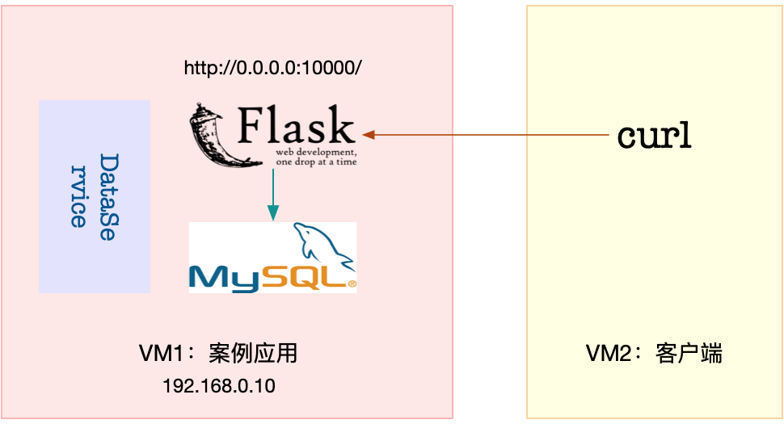

- 00 开篇词 别再让Linux性能问题成为你的绊脚石.md.html
- 01 如何学习Linux性能优化？.md.html
- 02 基础篇：到底应该怎么理解“平均负载”？.md.html
- 03 基础篇：经常说的 CPU 上下文切换是什么意思？（上）.md.html
- 04 基础篇：经常说的 CPU 上下文切换是什么意思？（下）.md.html
- 05 基础篇：某个应用的CPU使用率居然达到100%，我该怎么办？.md.html
- 06 案例篇：系统的 CPU 使用率很高，但为啥却找不到高 CPU 的应用？.md.html
- 07 案例篇：系统中出现大量不可中断进程和僵尸进程怎么办？（上）.md.html
- 08 案例篇：系统中出现大量不可中断进程和僵尸进程怎么办？（下）.md.html
- 09 基础篇：怎么理解Linux软中断？.md.html
- 10 案例篇：系统的软中断CPU使用率升高，我该怎么办？.md.html
- 11 套路篇：如何迅速分析出系统CPU的瓶颈在哪里？.md.html
- 12 套路篇：CPU 性能优化的几个思路.md.html
- 13 答疑（一）：无法模拟出 RES 中断的问题，怎么办？.md.html
- 14 答疑（二）：如何用perf工具分析Java程序？.md.html
- 15 基础篇：Linux内存是怎么工作的？.md.html
- 16 基础篇：怎么理解内存中的Buffer和Cache？.md.html
- 17 案例篇：如何利用系统缓存优化程序的运行效率？.md.html
- 18 案例篇：内存泄漏了，我该如何定位和处理？.md.html
- 19 案例篇：为什么系统的Swap变高了（上）.md.html
- 20 案例篇：为什么系统的Swap变高了？（下）.md.html
- 21 套路篇：如何“快准狠”找到系统内存的问题？.md.html
- 22 答疑（三）：文件系统与磁盘的区别是什么？.md.html
- 23 基础篇：Linux 文件系统是怎么工作的？.md.html
- 24 基础篇：Linux 磁盘I_O是怎么工作的（上）.md.html
- 25 基础篇：Linux 磁盘I_O是怎么工作的（下）.md.html
- 26 案例篇：如何找出狂打日志的“内鬼”？.md.html
- 27 案例篇：为什么我的磁盘I_O延迟很高？.md.html
- 28 案例篇：一个SQL查询要15秒，这是怎么回事？.md.html
- 29 案例篇：Redis响应严重延迟，如何解决？.md.html
- 30 套路篇：如何迅速分析出系统I_O的瓶颈在哪里？.md.html
- 31 套路篇：磁盘 I_O 性能优化的几个思路.md.html
- 32 答疑（四）：阻塞、非阻塞 I_O 与同步、异步 I_O 的区别和联系.md.html
- 33 关于 Linux 网络，你必须知道这些（上）.md.html
- 34 关于 Linux 网络，你必须知道这些（下）.md.html
- 35 基础篇：C10K 和 C1000K 回顾.md.html
- 36 套路篇：怎么评估系统的网络性能？.md.html
- 37 案例篇：DNS 解析时快时慢，我该怎么办？.md.html
- 38 案例篇：怎么使用 tcpdump 和 Wireshark 分析网络流量？.md.html
- 39 案例篇：怎么缓解 DDoS 攻击带来的性能下降问题？.md.html
- 40 案例篇：网络请求延迟变大了，我该怎么办？.md.html
- 41 案例篇：如何优化 NAT 性能？（上）.md.html
- 42 案例篇：如何优化 NAT 性能？（下）.md.html
- 43 套路篇：网络性能优化的几个思路（上）.md.html
- 44 套路篇：网络性能优化的几个思路（下）.md.html
- 45 答疑（五）：网络收发过程中，缓冲区位置在哪里？.md.html
- 46 案例篇：为什么应用容器化后，启动慢了很多？.md.html
- 47 案例篇：服务器总是时不时丢包，我该怎么办？（上）.md.html
- 48 案例篇：服务器总是时不时丢包，我该怎么办？（下）.md.html
- 49 案例篇：内核线程 CPU 利用率太高，我该怎么办？.md.html
- 50 案例篇：动态追踪怎么用？（上）.md.html
- 51 案例篇：动态追踪怎么用？（下）.md.html
- 52 案例篇：服务吞吐量下降很厉害，怎么分析？.md.html
- 53 套路篇：系统监控的综合思路.md.html
- 54 套路篇：应用监控的一般思路.md.html
- 55 套路篇：分析性能问题的一般步骤.md.html
- 56 套路篇：优化性能问题的一般方法.md.html
- 57 套路篇：Linux 性能工具速查.md.html
- 58 答疑（六）：容器冷启动如何性能分析？.md.html
- 加餐（一） 书单推荐：性能优化和Linux 系统原理.md.html
- 加餐（二） 书单推荐：网络原理和 Linux 内核实现.md.html
- 用户故事 “半路出家 ”，也要顺利拿下性能优化！.md.html
- 用户故事 运维和开发工程师们怎么说？.md.html
- 结束语 愿你攻克性能难关.md.html
- 捐赠
28 案例篇：一个SQL查询要15秒，这是怎么回事？
你好，我是倪朋飞。
上一节，我们分析了一个单词热度应用响应过慢的案例。当用 top、iostat 分析了系统的 CPU 和磁盘 I/O 使用情况后，我们发现系统出现了磁盘的 I/O 瓶颈，而且正是案例应用导致的。
接着，在使用 strace 却没有任何发现后，我又给你介绍了两个新的工具 filetop 和 opensnoop，分析它们对系统调用 write() 和 open() 的追踪结果。
我们发现，案例应用正在读写大量的临时文件，因此产生了性能瓶颈。找出瓶颈后，我们又用把文件数据都放在内存的方法，解决了磁盘 I/O 的性能问题。
当然，你可能会说，在实际应用中，大量数据肯定是要存入数据库的，而不会直接用文本文件的方式存储。不过，数据库也不是万能的。当数据库出现性能问题时，又该如何分析和定位它的瓶颈呢？
今天我们就来一起分析一个数据库的案例。这是一个基于 Python Flask 的商品搜索应用，商品信息存在 MySQL 中。这个应用可以通过 MySQL 接口，根据客户端提供的商品名称，去数据库表中查询商品信息。
非常感谢唯品会资深运维工程师阳祥义，帮助提供了今天的案例。
案例准备
本次案例还是基于 Ubuntu 18.04，同样适用于其他的 Linux 系统。我使用的案例环境如下所示：
机器配置：2 CPU，8GB 内存
预先安装 docker、sysstat 、git、make 等工具，如 apt install docker.io sysstat make git
其中，docker 和 sysstat 已经用过很多次，这里不再赘述；git 用来拉取本次案例所需脚本，这些脚本存储在 Github 代码仓库中；最后的 make 则是一个常用构建工具，这里用来运行今天的案例。
案例总共由三个容器组成，包括一个 MySQL 数据库应用、一个商品搜索应用以及一个数据处理的应用。其中，商品搜索应用以 HTTP 的形式提供了一个接口：
/：返回 Index Page；
/db/insert/products/ ：插入指定数量的商品信息；
/products/ ：查询指定商品的信息，并返回处理时间。
由于应用比较多，为了方便你运行它们，我把它们同样打包成了几个 Docker 镜像，并推送到了 Github 上。这样，你只需要运行几条命令，就可以启动了。
今天的案例需要两台虚拟机，其中一台作为案例分析的目标机器，运行 Flask 应用，它的 IP 地址是 192.168.0.10；另一台则是作为客户端，请求单词的热度。我画了一张图表示它们的关系。

接下来，打开两个终端，分别 SSH 登录到这两台虚拟机中，并在第一台虚拟机中安装上述工具。
跟以前一样，案例中所有命令都默认以 root 用户运行，如果你是用普通用户身份登陆系统，请运行 sudo su root命令切换到 root 用户。
到这里，准备工作就完成了。接下来，我们正式进入操作环节。
案例分析
首先，我们在第一个终端中执行下面命令，拉取本次案例所需脚本：
$ git clone https://github.com/feiskyer/linux-perf-examples
$ cd linux-perf-examples/mysql-slow
接着，执行下面的命令，运行本次的目标应用。正常情况下，你应该可以看到下面的输出：
# 注意下面的随机字符串是容器ID，每次运行均会不同，并且你不需要关注它，因为我们只会用到名字
$ make run
docker run --name=mysql -itd -p 10000:80 -m 800m feisky/mysql:5.6
WARNING: Your kernel does not support swap limit capabilities or the cgroup is not mounted. Memory limited without swap.
4156780da5be0b9026bcf27a3fa56abc15b8408e358fa327f472bcc5add4453f
docker run --name=dataservice -itd --privileged feisky/mysql-dataservice
f724d0816d7e47c0b2b1ff701e9a39239cb9b5ce70f597764c793b68131122bb
docker run --name=app --network=container:mysql -itd feisky/mysql-slow
81d3392ba25bb8436f6151662a13ff6182b6bc6f2a559fc2e9d873cd07224ab6
然后，再运行 docker ps 命令，确认三个容器都处在运行（Up）状态：
$ docker ps
CONTAINER ID IMAGE COMMAND CREATED STATUS PORTS NAMES
9a4e3c580963 feisky/mysql-slow "python /app.py" 42 seconds ago Up 36 seconds app
2a47aab18082 feisky/mysql-dataservice "python /dataservice…" 46 seconds ago Up 41 seconds dataservice
4c3ff7b24748 feisky/mysql:5.6 "docker-entrypoint.s…" 47 seconds ago Up 46 seconds 3306/tcp, 0.0.0.0:10000->80/tcp mysql
MySQL 数据库的启动过程，需要做一些初始化工作，这通常需要花费几分钟时间。你可以运行 docker logs 命令，查看它的启动过程。
当你看到下面这个输出时，说明 MySQL 初始化完成，可以接收外部请求了：
$ docker logs -f mysql
...
... [Note] mysqld: ready for connections.
Version: '5.6.42-log' socket: '/var/run/mysqld/mysqld.sock' port: 3306 MySQL Community Server (GPL)
而商品搜索应用则是在 10000 端口监听。你可以按 Ctrl+C ，停止 docker logs 命令；然后，执行下面的命令，确认它也已经正常运行。如果一切正常，你会看到 Index Page 的输出：
$ curl http://127.0.0.1:10000/
Index Page
接下来，运行 make init 命令，初始化数据库，并插入 10000 条商品信息。这个过程比较慢，比如在我的机器中，就花了十几分钟时间。耐心等待一段时间后，你会看到如下的输出：
$ make init
docker exec -i mysql mysql -uroot -P3306 < tables.sql
curl http://127.0.0.1:10000/db/insert/products/10000
insert 10000 lines
接着，我们切换到第二个终端，访问一下商品搜索的接口，看看能不能找到想要的商品。执行如下的 curl 命令：
$ curl http://192.168.0.10:10000/products/geektime
Got data: () in 15.364538192749023 sec
稍等一会儿，你会发现，这个接口返回的是空数据，而且处理时间超过15 秒。这么慢的响应速度让人无法忍受，到底出了什么问题呢？
既然今天用了 MySQL，你估计会猜到是慢查询的问题。
不过别急，在具体分析前，为了避免在分析过程中客户端的请求结束，我们把 curl 命令放到一个循环里执行。同时，为了避免给系统过大压力，我们设置在每次查询后，都先等待 5 秒，然后再开始新的请求。
所以，你可以在终端二中，继续执行下面的命令：
$ while true; do curl http://192.168.0.10:10000/products/geektime; sleep 5; done
接下来，重新回到终端一中，分析接口响应速度慢的原因。不过，重回终端一后，你会发现系统响应也明显变慢了，随便执行一个命令，都得停顿一会儿才能看到输出。
这跟上一节的现象很类似，看来，我们还是得观察一下系统的资源使用情况，比如CPU、内存和磁盘 I/O 等的情况。
首先，我们在终端一执行 top 命令，分析系统的 CPU 使用情况：
$ top
top - 12:02:15 up 6 days, 8:05, 1 user, load average: 0.66, 0.72, 0.59
Tasks: 137 total, 1 running, 81 sleeping, 0 stopped, 0 zombie
%Cpu0 : 0.7 us, 1.3 sy, 0.0 ni, 35.9 id, 62.1 wa, 0.0 hi, 0.0 si, 0.0 st
%Cpu1 : 0.3 us, 0.7 sy, 0.0 ni, 84.7 id, 14.3 wa, 0.0 hi, 0.0 si, 0.0 st
KiB Mem : 8169300 total, 7238472 free, 546132 used, 384696 buff/cache
KiB Swap: 0 total, 0 free, 0 used. 7316952 avail Mem
PID USER PR NI VIRT RES SHR S %CPU %MEM TIME+ COMMAND
27458 999 20 0 833852 57968 13176 S 1.7 0.7 0:12.40 mysqld
27617 root 20 0 24348 9216 4692 S 1.0 0.1 0:04.40 python
1549 root 20 0 236716 24568 9864 S 0.3 0.3 51:46.57 python3
22421 root 20 0 0 0 0 I 0.3 0.0 0:01.16 kworker/u
观察 top 的输出，我们发现，两个 CPU 的 iowait 都比较高，特别是 CPU0，iowait 已经超过 60%。而具体到各个进程， CPU 使用率并不高，最高的也只有 1.7%。
既然CPU的嫌疑不大，那问题应该还是出在了 I/O 上。我们仍然在第一个终端，按下 Ctrl+C，停止 top 命令；然后，执行下面的 iostat 命令，看看有没有 I/O 性能问题：
$ iostat -d -x 1
Device r/s w/s rkB/s wkB/s rrqm/s wrqm/s %rrqm %wrqm r_await w_await aqu-sz rareq-sz wareq-sz svctm %util
...
sda 273.00 0.00 32568.00 0.00 0.00 0.00 0.00 0.00 7.90 0.00 1.16 119.30 0.00 3.56 97.20
iostat 的输出你应该非常熟悉。观察这个界面，我们发现，磁盘 sda 每秒的读数据为 32 MB， 而 I/O 使用率高达 97% ，接近饱和，这说明，磁盘 sda 的读取确实碰到了性能瓶颈。
那要怎么知道，这些 I/O请求到底是哪些进程导致的呢？当然可以找我们的老朋友， pidstat。接下来，在终端一中，按下 Ctrl+C 停止 iostat 命令，然后运行下面的 pidstat 命令，观察进程的 I/O 情况：
# -d选项表示展示进程的I/O情况
$ pidstat -d 1
12:04:11 UID PID kB_rd/s kB_wr/s kB_ccwr/s iodelay Command
12:04:12 999 27458 32640.00 0.00 0.00 0 mysqld
12:04:12 0 27617 4.00 4.00 0.00 3 python
12:04:12 0 27864 0.00 4.00 0.00 0 systemd-journal
从 pidstat 的输出可以看到，PID 为 27458 的 mysqld 进程正在进行大量的读，而且读取速度是 32 MB/s，跟刚才 iostat 的发现一致。两个结果一对比，我们自然就找到了磁盘 I/O 瓶颈的根源，即 mysqld 进程。
不过，这事儿还没完。我们自然要怀疑一下，为什么 mysqld 会去读取大量的磁盘数据呢？按照前面猜测，我们提到过，这有可能是个慢查询问题。
可是，回想一下，慢查询的现象大多是 CPU 使用率高（比如 100% ），但这里看到的却是 I/O 问题。看来，这并不是一个单纯的慢查询问题，我们有必要分析一下 MySQL 读取的数据。
要分析进程的数据读取，当然还要靠上一节用到过的 strace+ lsof 组合。
接下来，还是在终端一中，执行 strace 命令，并且指定 mysqld 的进程号 27458。我们知道，MySQL 是一个多线程的数据库应用，为了不漏掉这些线程的数据读取情况，你要记得在执行 stace 命令时，加上 -f 参数：
$ strace -f -p 27458
[pid 28014] read(38, "934EiwT363aak7VtqF1mHGa4LL4Dhbks"..., 131072) = 131072
[pid 28014] read(38, "hSs7KBDepBqA6m4ce6i6iUfFTeG9Ot9z"..., 20480) = 20480
[pid 28014] read(38, "NRhRjCSsLLBjTfdqiBRLvN9K6FRfqqLm"..., 131072) = 131072
[pid 28014] read(38, "AKgsik4BilLb7y6OkwQUjjqGeCTQTaRl"..., 24576) = 24576
[pid 28014] read(38, "hFMHx7FzUSqfFI22fQxWCpSnDmRjamaW"..., 131072) = 131072
[pid 28014] read(38, "ajUzLmKqivcDJSkiw7QWf2ETLgvQIpfC"..., 20480) = 20480
观察一会，你会发现，线程 28014 正在读取大量数据，且读取文件的描述符编号为 38。这儿的 38 又对应着哪个文件呢？我们可以执行下面的 lsof 命令，并且指定线程号 28014 ，具体查看这个可疑线程和可疑文件：
$ lsof -p 28014
奇怪的是，lsof 并没有给出任何输出。实际上，如果你查看 lsof 命令的返回值，就会发现，这个命令的执行失败了。
我们知道，在 SHELL 中，特殊标量 $? 表示上一条命令退出时的返回值。查看这个特殊标量，你会发现它的返回值是1。可是别忘了，在 Linux 中，返回值为 0 ，才表示命令执行成功。返回值为1，显然表明执行失败。
$ echo $?
1
为什么 lsof 命令执行失败了呢？这里希望你暂停往下，自己先思考一下原因。记住我的那句话，遇到现象解释不了，先去查查工具文档。
事实上，通过查询 lsof 的文档，你会发现，-p 参数需要指定进程号，而我们刚才传入的是线程号，所以 lsof 失败了。你看，任何一个细节都可能成为性能分析的“拦路虎”。
回过头我们看，mysqld 的进程号是 27458，而 28014 只是它的一个线程。而且，如果你观察 一下mysqld 进程的线程，你会发现，mysqld 其实还有很多正在运行的其他线程：
# -t表示显示线程，-a表示显示命令行参数
$ pstree -t -a -p 27458
mysqld,27458 --log_bin=on --sync_binlog=1
...
├─{mysqld},27922
├─{mysqld},27923
└─{mysqld},28014
找到了原因，lsof的问题就容易解决了。把线程号换成进程号，继续执行 lsof 命令：
$ lsof -p 27458
COMMAND PID USER FD TYPE DEVICE SIZE/OFF NODE NAME
...
mysqld 27458 999 38u REG 8,1 512440000 2601895 /var/lib/mysql/test/products.MYD
这次我们得到了lsof的输出。从输出中可以看到， mysqld 进程确实打开了大量文件，而根据文件描述符（FD）的编号，我们知道，描述符为 38 的是一个路径为 /var/lib/mysql/test/products.MYD 的文件。这里注意， 38 后面的 u 表示， mysqld 以读写的方式访问文件。
看到这个文件，熟悉 MySQL 的你可能笑了：
MYD 文件，是 MyISAM 引擎用来存储表数据的文件；
文件名就是数据表的名字；
而这个文件的父目录，也就是数据库的名字。
换句话说，这个文件告诉我们，mysqld 在读取数据库 test 中的 products 表。
实际上，你可以执行下面的命令，查看 mysqld 在管理数据库 test 时的存储文件。不过要注意，由于 MySQL 运行在容器中，你需要通过 docker exec 到容器中查看：
$ docker exec -it mysql ls /var/lib/mysql/test/
db.opt products.MYD products.MYI products.frm
从这里你可以发现，/var/lib/mysql/test/ 目录中有四个文件，每个文件的作用分别是：
MYD 文件用来存储表的数据；
MYI 文件用来存储表的索引；
frm 文件用来存储表的元信息（比如表结构）；
opt 文件则用来存储数据库的元信息（比如字符集、字符校验规则等）。
当然，看到这些，你可能还有一个疑问，那就是，这些文件到底是不是 mysqld 正在使用的数据库文件呢？有没有可能是不再使用的旧数据呢？其实，这个很容易确认，查一下 mysqld 配置的数据路径即可。
你可以在终端一中，继续执行下面的命令：
$ docker exec -i -t mysql mysql -e 'show global variables like "%datadir%";'
+---------------+-----------------+
| Variable_name | Value |
+---------------+-----------------+
| datadir | /var/lib/mysql/ |
+---------------+-----------------+
这里可以看到，/var/lib/mysql/ 确实是 mysqld 正在使用的数据存储目录。刚才分析得出的数据库 test 和数据表 products ，都是正在使用。
注：其实 lsof 的结果已经可以确认，它们都是 mysqld 正在访问的文件。再查询 datadir ，只是想换一个思路，进一步确认一下。
既然已经找出了数据库和表，接下来要做的，就是弄清楚数据库中正在执行什么样的 SQL 了。我们继续在终端一中，运行下面的 docker exec 命令，进入 MySQL 的命令行界面：
$ docker exec -i -t mysql mysql
...
Type 'help;' or '\h' for help. Type '\c' to clear the current input statement.
mysql>
下一步你应该可以想到，那就是在 MySQL 命令行界面中，执行 show processlist 命令，来查看当前正在执行的 SQL 语句。
不过，为了保证 SQL 语句不截断，这里我们可以执行 show full processlist 命令。如果一切正常，你应该可以看到如下输出：
mysql> show full processlist;
+----+------+-----------------+------+---------+------+--------------+-----------------------------------------------------+
| Id | User | Host | db | Command | Time | State | Info |
+----+------+-----------------+------+---------+------+--------------+-----------------------------------------------------+
| 27 | root | localhost | test | Query | 0 | init | show full processlist |
| 28 | root | 127.0.0.1:42262 | test | Query | 1 | Sending data | select * from products where productName='geektime' |
+----+------+-----------------+------+---------+------+--------------+-----------------------------------------------------+
2 rows in set (0.00 sec)
这个输出中，
db 表示数据库的名字；
Command 表示 SQL 类型；
Time 表示执行时间；
State 表示状态；
而 Info 则包含了完整的 SQL 语句。
多执行几次 show full processlist 命令，你可看到 select * from products where productName=‘geektime’ 这条 SQL 语句的执行时间比较长。
再回忆一下，案例开始时，我们在终端二查询的产品名称 http://192.168.0.10:10000/products/geektime，其中的 geektime 也符合这条查询语句的条件。
我们知道，MySQL 的慢查询问题，很可能是没有利用好索引导致的，那这条查询语句是不是这样呢？我们又该怎么确认，查询语句是否利用了索引呢？
其实，MySQL 内置的 explain 命令，就可以帮你解决这个问题。继续在 MySQL 终端中，运行下面的 explain 命令：
# 切换到test库
mysql> use test;
# 执行explain命令
mysql> explain select * from products where productName='geektime';
+----+-------------+----------+------+---------------+------+---------+------+-------+-------------+
| id | select_type | table | type | possible_keys | key | key_len | ref | rows | Extra |
+----+-------------+----------+------+---------------+------+---------+------+-------+-------------+
| 1 | SIMPLE | products | ALL | NULL | NULL | NULL | NULL | 10000 | Using where |
+----+-------------+----------+------+---------------+------+---------+------+-------+-------------+
1 row in set (0.00 sec)
观察这次的输出。这个界面中，有几个比较重要的字段需要你注意，我就以这个输出为例，分别解释一下：
select_type 表示查询类型，而这里的SIMPLE 表示此查询不包括 UNION 查询或者子查询；
table 表示数据表的名字，这里是 products；
type 表示查询类型，这里的 ALL 表示全表查询，但索引查询应该是 index 类型才对；
possible_keys 表示可能选用的索引，这里是 NULL；
key 表示确切会使用的索引，这里也是 NULL；
rows 表示查询扫描的行数，这里是 10000。
根据这些信息，我们可以确定，这条查询语句压根儿没有使用索引，所以查询时，会扫描全表，并且扫描行数高达 10000 行。响应速度那么慢也就难怪了。
走到这一步，你应该很容易想到优化方法，没有索引那我们就自己建立，给 productName 建立索引就可以了。不过，增加索引前，你需要先弄清楚，这个表结构到底长什么样儿。
执行下面的 MySQL 命令，查询 products 表的结构，你会看到，它只有一个 id 主键，并不包括 productName 的索引：
mysql> show create table products;
...
| products | CREATE TABLE `products` (
`id` int(11) NOT NULL,
`productCode` text NOT NULL COMMENT '产品代码',
`productName` text NOT NULL COMMENT '产品名称',
...
PRIMARY KEY (`id`)
) ENGINE=MyISAM DEFAULT CHARSET=utf8 ROW_FORMAT=DYNAMIC |
...
接下来，我们就可以给 productName 建立索引了，也就是执行下面的 CREATE INDEX 命令：
mysql> CREATE INDEX products_index ON products (productName);
ERROR 1170 (42000): BLOB/TEXT column 'productName' used in key specification without a key length
不过，醒目的ERROR告诉我们，这条命令运行失败了。根据错误信息，productName 是一个 BLOB/TEXT 类型，需要设置一个长度。所以，想要创建索引，就必须为 productName 指定一个前缀长度。
那前缀长度设置为多大比较合适呢？这里其实有专门的算法，即通过计算前缀长度的选择性，来确定索引的长度。不过，我们可以稍微简化一下，直接使用一个固定数值（比如 64），执行下面的命令创建索引：
mysql> CREATE INDEX products_index ON products (productName(64));
Query OK, 10000 rows affected (14.45 sec)
Records: 10000 Duplicates: 0 Warnings: 0
现在可以看到，索引已经建好了。能做的都做完了，最后就该检查一下，性能问题是否已经解决了。
我们切换到终端二中，查看还在执行的 curl 命令的结果：
Got data: ()in 15.383180141448975 sec
Got data: ()in 15.384996891021729 sec
Got data: ()in 0.0021054744720458984 sec
Got data: ()in 0.003951072692871094 sec
显然，查询时间已经从 15 秒缩短到了 3 毫秒。看来，没有索引果然就是这次性能问题的罪魁祸首，解决了索引，就解决了查询慢的问题。
案例思考
到这里，商品搜索应用查询慢的问题已经完美解决了。但是，对于这个案例，我还有一点想说明一下。
不知道你还记不记得，案例开始时，我们启动的几个容器应用。除了 MySQL 和商品搜索应用外，还有一个 DataService 应用。为什么这个案例开始时，要运行一个看起来毫不相关的应用呢？
实际上，DataService 是一个严重影响 MySQL 性能的干扰应用。抛开上述索引优化方法不说，这个案例还有一种优化方法，也就是停止 DataService 应用。
接下来，我们就删除数据库索引，回到原来的状态；然后停止 DataService 应用，看看优化效果如何。
首先，我们在终端二中停止 curl 命令，然后回到终端一中，执行下面的命令删除索引：
# 删除索引
$ docker exec -i -t mysql mysql
mysql> use test;
mysql> DROP INDEX products_index ON products;
接着，在终端二中重新运行 curl 命令。当然，这次你会发现，处理时间又变慢了：
$ while true; do curl http://192.168.0.10:10000/products/geektime; sleep 5; done
Got data: ()in 16.884345054626465 sec
接下来，再次回到终端一中，执行下面的命令，停止 DataService 应用：
# 停止 DataService 应用
$ docker rm -f dataservice
最后，我们回到终端二中，观察 curl 的结果：
Got data: ()in 16.884345054626465 sec
Got data: ()in 15.238174200057983 sec
Got data: ()in 0.12604427337646484 sec
Got data: ()in 0.1101069450378418 sec
Got data: ()in 0.11235237121582031 sec
果然，停止 DataService 后，处理时间从 15 秒缩短到了 0.1 秒，虽然比不上增加索引后的 3 毫秒，但相对于 15 秒来说，优化效果还是非常明显的。
那么，这种情况下，还有没有 I/O 瓶颈了呢？
我们切换到终端一中，运行下面的 vmstat 命令（注意不是 iostat，稍后解释原因），观察 I/O 的变化情况：
$ vmstat 1
procs -----------memory---------- ---swap-- -----io---- -system-- ------cpu-----
r b swpd free buff cache si so bi bo in cs us sy id wa st
0 1 0 6809304 1368 856744 0 0 32640 0 52 478 1 0 50 49 0
0 1 0 6776620 1368 889456 0 0 32640 0 33 490 0 0 50 49 0
0 0 0 6747540 1368 918576 0 0 29056 0 42 568 0 0 56 44 0
0 0 0 6747540 1368 918576 0 0 0 0 40 141 1 0 100 0 0
0 0 0 6747160 1368 918576 0 0 0 0 40 148 0 1 99 0 0
你可以看到，磁盘读（bi）和 iowait（wa）刚开始还是挺大的，但没过多久，就都变成了 0 。换句话说，I/O 瓶颈消失了。
这是为什么呢？原因先留个悬念，作为今天的思考题。
回过头来解释一下刚刚的操作，在查看 I/O 情况时，我并没用 iostat 命令，而是用了 vmstat。其实，相对于 iostat 来说，vmstat 可以同时提供 CPU、内存和 I/O 的使用情况。
在性能分析过程中，能够综合多个指标，并结合系统的工作原理进行分析，对解释性能现象通常会有意想不到的帮助。
小结
今天我们分析了一个商品搜索的应用程序。我们先是通过 top、iostat 分析了系统的 CPU 和磁盘使用情况，发现了磁盘的 I/O 瓶颈。
接着，我们借助 pidstat ，发现瓶颈是 mysqld 导致的。紧接着，我们又通过 strace、lsof，找出了 mysqld 正在读的文件。同时，根据文件的名字和路径，我们找出了 mysqld 正在操作的数据库和数据表。综合这些信息，我们判断，这是一个没有利用索引导致的慢查询问题。
于是，我们登录到 MySQL 命令行终端，用数据库分析工具进行验证，发现 MySQL 查询语句访问的字段，果然没有索引。所以，增加索引，就可以解决案例的性能问题了。
思考
最后，给你留一个思考题，也是我在案例最后部分提到过的，停止 DataService 后，商品搜索应用的处理时间，从 15 秒缩短到了 0.1 秒。这是为什么呢？
我给个小小的提示。你可以先查看 dataservice.py 的源码，你会发现，DataService 实际上是在读写一个仅包括 “data” 字符串的小文件。不过在读取文件前，它会先把 /proc/sys/vm/drop_caches 改成 1。
还记得这个操作有什么作用吗？如果不记得，可以用 man 查询 proc 文件系统的文档。
欢迎在留言区和我讨论，也欢迎把这篇文章分享给你的同事、朋友。我们一起在实战中演练，在交流中进步。
© 2019 - 2023 Liangliang Lee. Powered by gin and hexo-theme-book.